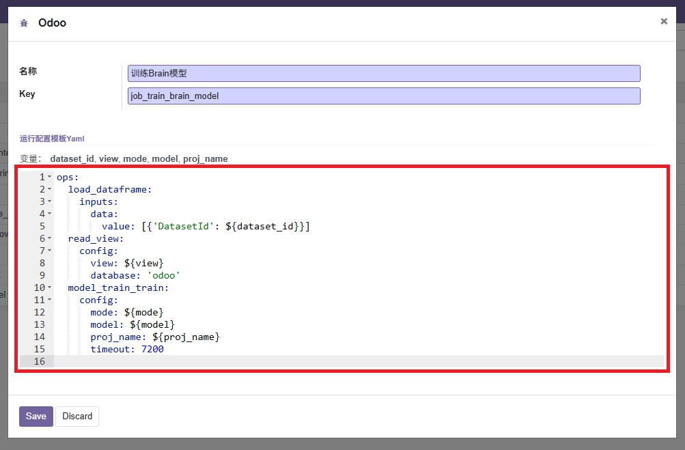

Tired of the rigid default code editors in Odoo? Web Widget YAML gives you full control. Easily edit configuration files, scripts, or data snippets with full syntax highlighting and custom UI settings.

Just add the widget to your field in any form view:
<field name="yaml_data" widget="yaml" options="{'fontSize': 14}"/>